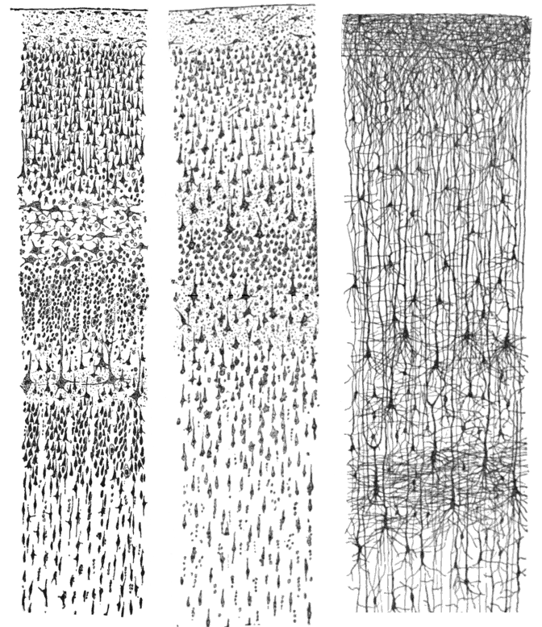
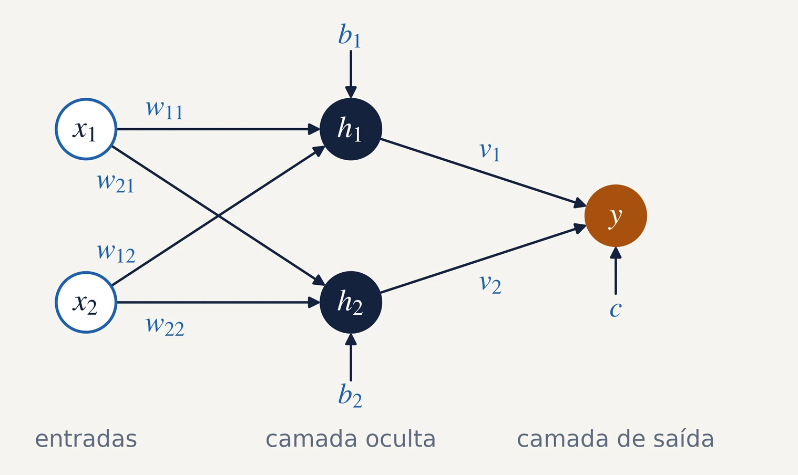
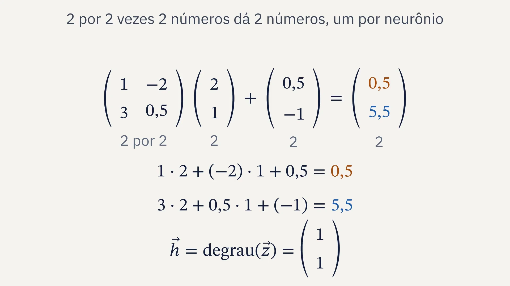
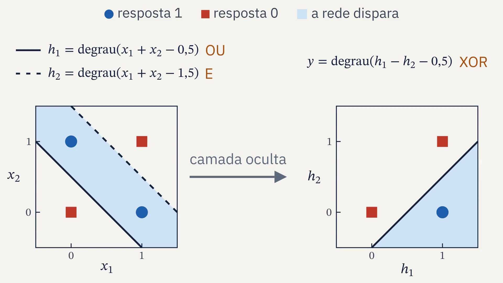
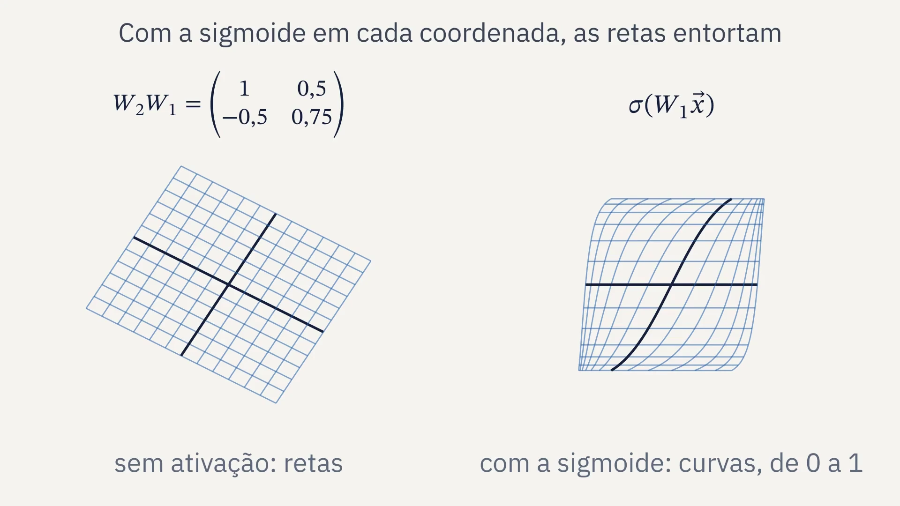
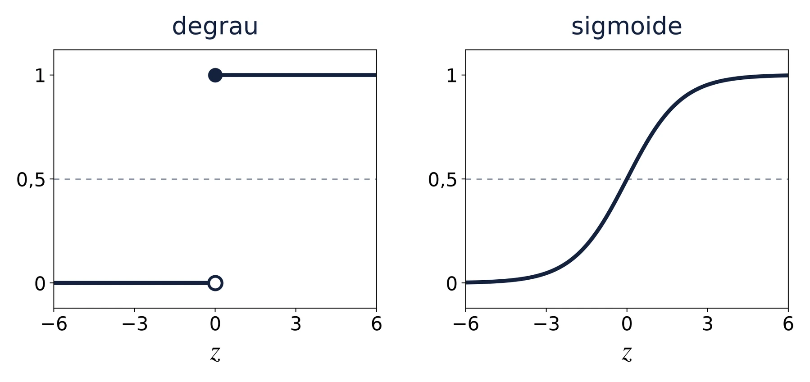
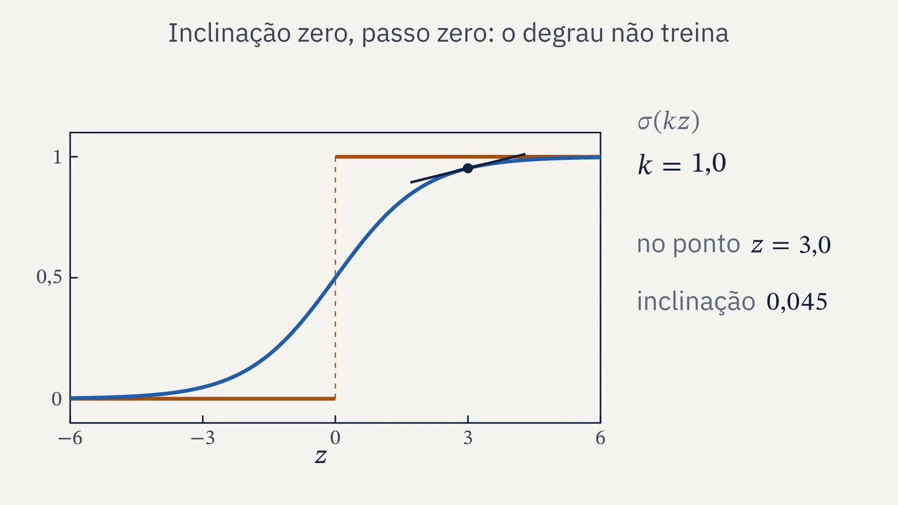
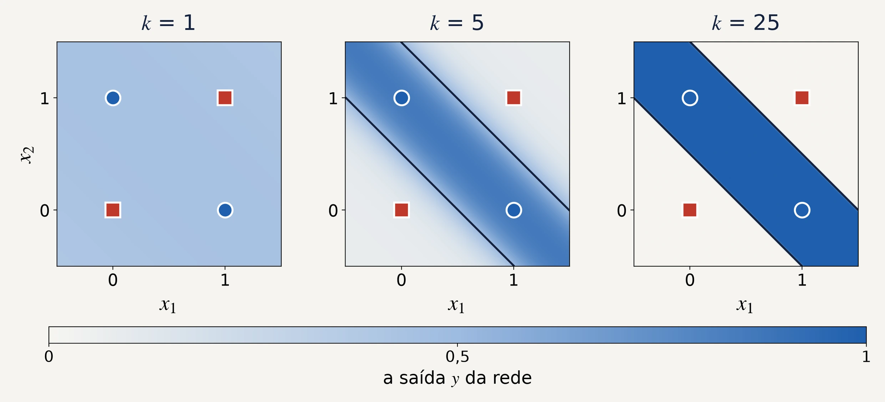

SIENA, NIPS-CERN, UFJF
Limiar
Redes neurais, do neurônio ao fractal
Aula 3: matrizes e camadas
13/11/2026. C∴ Chrysthofer A. A. Afonso

Camadas do córtex cerebral humano, em três desenhos de Santiago Ramón y Cajal, de 1899. Domínio público.
Limiar, aula 3: matrizes e camadas


1 · Revisão
O que ficou das aulas 1 e 2, de memória
1
O que um neurônio calcula, e o que ele desenha no plano?
2
Por que nenhum neurônio sozinho acerta o XOR?
3
O que a perda mede?
4
O que o gradiente descendente faz a cada passo?
Limiar, aula 3: matrizes e camadas
1 · Revisão
Das aulas 1 e 2, três contas
O neurônio
a soma ponderada mais o viés; o degrau decide
A perda
a média dos quadrados dos erros
O passo
cada parâmetro anda contra a própria derivada
Limiar, aula 3: matrizes e camadas
1 · Revisão
O fio do curso, da aula 1 à 10
1
O neurônio e o perceptron
um neurônio desenha uma reta, e nenhuma reta separa o XOR
25/09, presencial
2
Derivada e gradiente
o passo contra a derivada; a taxa grande demais faz o treino divergir
02/10, presencial
3
Matrizes e camadas
duas camadas separam o XOR, com pesos escolhidos à mão
13/11, on-line
4
O Jacobiano
a regra da cadeia com vetores, uma camada de cada vez
13/11, on-line
5
Retropropagação
a regra da cadeia, de trás para a frente, acha os pesos do XOR
13/11, on-line
6
O MNIST em NumPy
um MLP em 70 mil dígitos escritos à mão, com treino, validação e teste
27/11, on-line
7
PyTorch
a biblioteca faz a retropropagação; o erro final contra a taxa
27/11, on-line
8
Os dados do CERN
um MLP estima a massa dos dois múons, conferida pela fórmula
04/12, on-line
9
O fractal e o projeto
a fronteira entre a taxa que converge e a que diverge
04/12, on-line
10
A apresentação
a apresentação do projeto e a revisão do curso inteiro
11/12, on-line
Limiar, aula 3: matrizes e camadas
2 · Uma camada, uma matriz
Uma camada é uma conta só

Camada oculta
o vetor h é o degrau, posição por posição, de W vezes o vetor x, mais o vetor b
Camada de saída
Matriz, no curso: uma tabela de números com m linhas e n colunas; aqui, a linha k de W guarda os pesos do neurônio k.
Limiar, aula 3: matrizes e camadas
2 · Uma camada, uma matriz
A matriz vezes o vetor, número a número

Limiar, aula 3: matrizes e camadas
2 · Uma camada, uma matriz
O XOR com pesos escolhidos à mão
OU
E
XOR
0
0
0
0
0
0
1
1
0
1
1
0
1
0
1
1
1
1
1
0
y dispara só com h₁ = 1 e h₂ = 0: o OU sem o E, que é o XOR.
Limiar, aula 3: matrizes e camadas
2 · Uma camada, uma matriz
As quatro entradas numa conta só
W transposta: as linhas de W viram colunas; cada linha de X é uma entrada
Lote
as entradas que passam juntas pela rede, uma por linha de X; aqui, as quatro do XOR
No NumPy
X @ W.T + b
o NumPy soma b a cada linha; é a forma do código da aula 6, com 64 imagens por lote
Limiar, aula 3: matrizes e camadas
2 · Uma camada, uma matriz
A camada oculta muda o plano

Limiar, aula 3: matrizes e camadas
2 · Uma camada, uma matriz
Camada, camada oculta e MLP
Camada
neurônios que leem as mesmas entradas, cada um com os seus pesos; a saída de uma camada é a entrada da seguinte
Camada oculta
a que fica entre a entrada e a saída: não recebe os dados nem dá a resposta. O artigo de 1986 de Rumelhart, Hinton e Williams chama de hidden as unidades que não são entrada nem saída
Perceptron multicamadas, o MLP
camadas empilhadas, cada neurônio ligado a todos os da camada seguinte. A rede do XOR é um MLP 2-2-1: duas entradas, dois neurônios ocultos, uma saída
Limiar, aula 3: matrizes e camadas
2 · Uma camada, uma matriz
Quantos números a rede guarda
uma camada de n entradas e m neurônios: os pesos de W e um viés por neurônio
a rede
as camadas
os parâmetros
o XOR, aulas 3 e 5
2, 2, 1
9
a rede pequena, aulas 7 e 9
784, 16, 10
12.730
o MNIST, aula 6
784, 256, 10
203.530
a massa invariante, aula 8
8, 256, 256, 1
68.353
Na rede do MNIST, a primeira camada guarda 200.960 dos 203.530: cada pixel liga a cada neurônio.
Limiar, aula 3: matrizes e camadas
3 · A ativação
O plano inteiro: matrizes e a sigmoide

Limiar, aula 3: matrizes e camadas
3 · A ativação
Sem ativação, duas camadas valem uma
W₂W₁, W dois vezes W um: o produto de duas matrizes, W₁ e depois W₂ numa matriz só
A forma é a de uma camada só, W vezes o vetor x mais um vetor: de novo uma reta por neurônio de saída, e o XOR sem solução.
Conferido em NumPy
com matrizes sorteadas, semente 3: o arredondamento do computador
Por isso
a camada oculta precisa de uma ativação que não seja linear, como o degrau
Limiar, aula 3: matrizes e camadas
3 · A ativação
Duas camadas lineares, com números
pesos
viés
1ª camada
2ª camada
A camada única
Com o vetor x = (2; 1)
pelas duas camadas
pela camada única
Limiar, aula 3: matrizes e camadas
3 · A ativação
Do degrau à sigmoide

sigma de z é 1 sobre 1 mais e elevado a menos z; e ≈ 2,718, o número de Euler
sigma linha de z: a inclinação da sigmoide
O degrau é plano fora do zero: a derivada é zero, e o gradiente não anda.
A sigmoide é lisa: tem inclinação em todo ponto, e a saída fica entre 0 e 1.
Limiar, aula 3: matrizes e camadas
3 · A ativação
A sigmoide vira degrau, e o degrau não inclina

Limiar, aula 3: matrizes e camadas
3 · A ativação
Os pesos do XOR com a sigmoide

Pesos à mão vezes k: com k = 1, a rede erra (0; 1) e (1; 0); com k = 5, acerta; com k = 25, é o degrau.
Limiar, aula 3: matrizes e camadas
3 · A ativação
Como achar os nove números da rede sem escolher à mão?
A resposta é a aula 5: a retropropagação.
Limiar, aula 3: matrizes e camadas
4 · O código
A rede do XOR em NumPy
1
A rede como lista de camadas, cada uma a matriz W e o vetor dos vieses
2
A passada para a frente, para qualquer número de camadas: a saída de uma é a entrada da seguinte
3
A tabela das quatro entradas, conferida contra o XOR
4
Duas camadas lineares contra uma, com matrizes sorteadas
O NumPy que resolve
W @ x + b
(z >= 0).astype(int)
W2 @ W1
np.abs(a - b).max()
o @ é o produto de matrizes; o astype troca True e False por 1 e 0
python aulas/03-camadas/codigo/xor_a_mao.py
Limiar, aula 3: matrizes e camadas
5 · Fechamento
Para estudar e entregar
Estudo
- 3Blue1Brown, cálculo, capítulo 4: a regra da cadeia
- Khan Academy: o Jacobiano, três vídeos
Entrega
- a passada para a frente para qualquer número de camadas
- duas camadas lineares contra uma, em NumPy
- uma pergunta sobre o estudo
A seguir
- aula 4: a regra da cadeia com vetores, o Jacobiano
- aula 5: a retropropagação acha os nove pesos
Limiar, aula 3: matrizes e camadas